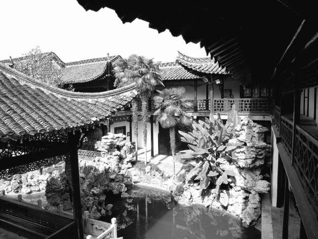

七
在我所读有关南明历史的论述中，能够瞩目于军事建构问题对南明时局之影响的，是一位美国作者司徒琳（Lynn A.Struve）。她的《南明史》，以明朝的“右文倾向”（或我所称的“以文抑武”）为起点和基础，将其视为南明的主要和基本矛盾。她说：“在明代中国不会有如同艾森豪威尔（Dwight Eisenhower）或者黑格（Alexander Haig）的官员，也不会有做了州长或市长还向选民炫耀已往军功的上校。”[38]西方作者对这种情形拥有特殊的敏感，极为自然，而中国人可能却比较迟钝。过去我们的南明研究，普遍注意的是党争或道德问题，把它看作左右南明的主要矛盾。我们比较习惯这样的思路和兴趣点，可惜这并非崇祯之后格局变化所在。弘光朝的新局面，在于武人地位改变及由此造成的牵制与影响。与大多数人的历史认识不同，弘光朝并非因为清兵南下而崩溃；实际压垮弘光朝的，是内部军变，亦即左良玉部的叛乱——当然，左部叛乱又只是国家与武力这对矛盾最终的总爆发，在此之前，龃龉不断、酝酿已久，以后我们会借史可法督师扬州的情形作更加细致的观察。

扬州何园。
甲申国变后，随着政治中心南移，与南京一江之隔的扬州，从此不平静。类似这样的富裕、精致景象，刺激着权重益大的将军们的贪欲，引发流血事件。设四镇后，成为明军前敌总部亦即史可法督师驻地。清军南下，扬州遭血洗，作为它灭亡明朝的祭刀之物。
扬州盐商宅第。
扬州，古时声色之都，商业之都。除开古运河与长江相交处这一地利，扬州自古繁华的另一原因，便是盐商汇聚。如此考究的盐商宅第，提示着这座城市的普遍的豪奢。
过往二百余年，国家政治生活中几乎没有武人身影。太祖朱元璋尽戮宿将，逮其末年，依《明史》所说：“公、侯诸宿将坐奸党，先后丽法，稀得免者”，只有一个汤和“独享寿考”。[39]一般都将此解读为朱元璋残忍好杀，固然不错，然仅仅如是观，未免小觑了这位农民皇帝。实际上，其中有他的治国取向。《闲中今古录》载：
（太祖）响意右文，诸勋臣不平。上语以故曰：“世乱则用武，世治宜用文，非偏也。”[40]
回答相当坦然：打压武人，意在右文。这一右文倾向，明朝始终保持不变，即便中间朱棣曾以“靖难之役”大肆用兵，武人地位也未因此反弹。以后明朝并非没有大的政治动荡，景泰末“夺门之变”、万历末“移宫案”，都关乎帝位，但我们在其中只见文臣身影，未见武人参预或武力因素，后者政治上的边缘化一目了然。
弘光政治，却庶几相颠倒了。首先，福王以兵而立，文臣迫于军事压力不敢坚持己见、草草放弃主张，这是过去未有的情形。紧接着，又发生一连串武臣跋扈，乃至凌辱文臣的事情。四月二十七日，讨论迎立问题时，吕大器表现犹豫，诚意伯、提督操江刘孔昭“詈大器不得出言摇惑”，不但态度粗暴，说话内容也是命令式的，而吕大器竟“不敢复言”。[41]福王进城入宫当天，文武百官第一次正式谒见的时候，灵璧侯汤国祚就当场喧哗，“讦户部措饷不时，其言愤絮”，文官大多沉默，倒是大太监韩赞周出面制止，“叱之起”。[42]这位灵璧侯就是汤和的后代，回想乃祖晚年“入闻国论，一语不敢外泄”[43]的表现，岂非天差地别？
过了一个月，同样是在御前，早朝甫毕，刘孔昭拉着汤国祚、赵之龙（忻城伯、京营戎政总督），“呼大小九卿科道于廷”，“大骂”吏部尚书张慎言，“欲逐之去”。骂他“排忽武臣，专选文臣，结党行私”。如此骂了一阵子，犹不过瘾，刘孔昭竟然“袖中取出小刃，逐慎言于班，必欲手刃之”。最后，还是靠韩赞周得以制止，“叱之曰‘从古无此朝规！’乃止。”[44]
这出闹剧，将武臣的忘形展示无遗。他们并非仅仅不把文职重臣放在眼里，索性也置皇帝的威仪于不顾。打个比方，犹今之在法庭上，控辩双方意见不合，一方居然拍桌咆哮甚而大打出手。这种态度，岂止是欺压对手，而是连同法官、法庭一并藐视了。故而韩赞周斥以“从古无此朝规”。
刘孔昭等明里冲着张慎言而来，实则是向文官主政的传统发起挑战。吏部专司官员选用，古时称吏部和吏部长官为“铨曹”，这个“铨”字，便是考量、衡准之意，正如御史王孙蕃所说：“吏部司职用人，除推官升官外，别无职掌。”[45]作为吏部尚书，张慎言提出任用人选，不仅是分内之事，实际上舍此他简直也就无事可做。但此刻，在新的形势下，刘孔昭一班武臣已不甘此权尽操文官之手，他们打着反对结党营私的旗号，图谋参与到这项权力之中，这是闹事的实质。所以，他们与其说是攻击张慎言，不如说是在表达对国家制度的不满。事后，内阁大学士高弘图向弘光皇帝上奏时，严正指出：
文武官各有职掌，毋得侵犯，即文臣中各部不得夺吏部之权。今用人乃慎言事，孔昭一手握定，非其所私即谓之奸，臣等皆属赘员矣。[46]
作为抗议，高弘图提出辞职。受到指责和侮辱的张慎言，更是坚决自请“罢斥”。正常情况下，皇帝应根据原则，对那班逾分的武臣进行一定处理，至少给予申饬；但在朱由崧来说，自己帝位就拜这些武人所赐，其“定策之功”回报还来不及，哪敢说三道四？他虽然也努力“慰留”张慎言，却始终没讲一句公道话。结果，十多天后张慎言果然“致仕”，成为弘光朝第一位去职的文职重臣。
整个武臣集团都蠢蠢欲动。发出类似信号的，不仅有开国元戎的后代，还有手握重兵的野战军统帅。“四镇”之一、新晋伯爵的刘泽清毫不掩饰地叫嚣：
中兴所倚，全在政府，旧用大帅，自应群臣公推，今用宰相，亦须大帅参同。[47]
什么意思呢？他认为：走向“中兴”，必须革新政府；过去多少年，大帅的任用都由文官说了算，现在要变一变了，何人当宰相，大帅也应参与决定。
没有什么比这更赤裸裸地表明了军人干政的意图。二百多年“以文抑武”体制，现在明显成为明朝前途中一片最大的暗礁。一边是不容动摇的祖制、国本，一边是沮抑已久、而今在现实的支持下话语权突然放大，野心亦随之猛增的武人集团；这种尖锐矛盾，令所谓文、武分途变成了文、武对立。此时，李自成奔命远方，满清“腥羶”也根本还没有逼近，南京却已经内伤深重。这么一具躯体，还需要从外部给予打击，才会颓然委地吗？